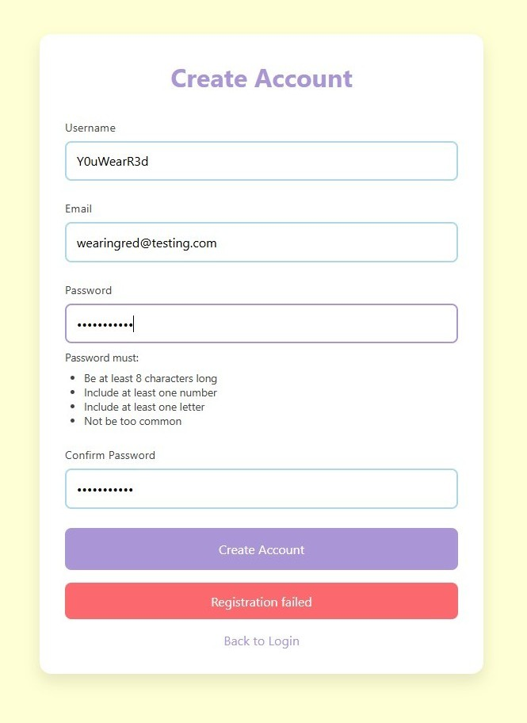
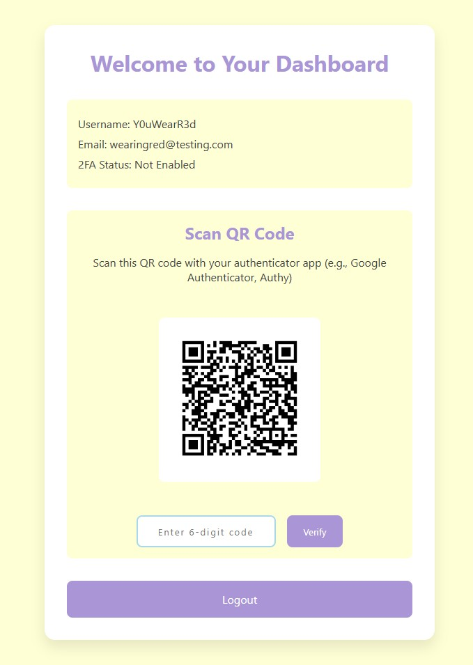

AuthSecurity
Secure User Authentication Project
A Django REST Framework backend with a vanilla JavaScript frontend for session login, CSRF-protected API calls, email validation, and TOTP 2FA - built locally as an auth learning project.